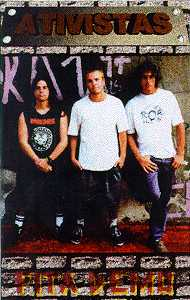

- 10 músicas (23 min) - |
|||||||||||||||||||||
|  |
|
||||||||||||||||||||
características:
| qualidade de gravação | adesivo | letras das músicas |
| excelente | não | não |
|
|
comentários:
" punk rock básico 4 tempos clássico. onde já ouvi isso? influências totais dos mestres ramones. todas as letras em português e falando sobre o cotidiano dos integrantes da banda, coisas boas e ruins. a qualidade da gravação está boa e os côros são afinados. é uma fita indispensável para os fãs do 1-2-3-4. "